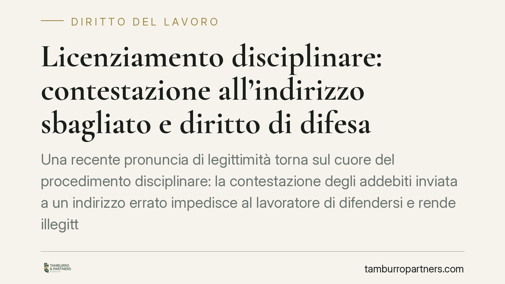

Licenziamento disciplinare: contestazione all'indirizzo sbagliato e diritto di difesa
Una recente pronuncia di legittimità torna sul cuore del procedimento disciplinare: la contestazione degli addebiti inviata a un indirizzo errato impedisce al lavoratore di difendersi e rende illegittimo il licenziamento. Il vizio non si sana con atti successivi. Vediamo perché la corretta comunicazione è un requisito sostanziale, non una formalità, e cosa comporta per datore e dipendente.

Il caso
Un lavoratore riceve la lettera di licenziamento, ma scopre che la preventiva contestazione degli addebiti – l'atto con cui il datore descrive i fatti contestati – era stata spedita a un indirizzo non corrispondente a quello effettivo. Risultato: non ha mai potuto leggere l'accusa né replicare.
La questione portata davanti alla Corte di Cassazione è netta: un licenziamento disciplinare può reggersi se il lavoratore non è stato messo in condizione di conoscere ciò che gli viene imputato? La risposta della giurisprudenza di legittimità è negativa.
> Avvertenza: gli estremi esatti della pronuncia citata nella fonte (numero e anno) sono da verificare presso le banche dati ufficiali prima di ogni utilizzo. Il principio di diritto qui esposto è comunque consolidato e trova fondamento diretto nella legge.
Inquadramento normativo
Il perno è l'art. 7 della Legge n. 300/1970 (Statuto dei Lavoratori). La norma impone che nessun provvedimento disciplinare – salvo il semplice rimprovero verbale – possa essere adottato senza una previa contestazione scritta dell'addebito e senza aver sentito il lavoratore a sua difesa.
Il lavoratore ha diritto a un termine per presentare le proprie giustificazioni: l'art. 7 fissa in almeno cinque giorni il termine minimo a difesa. Si tratta di un minimo legale, non di una prassi derogabile verso il basso.
A completare il quadro interviene l'art. 1335 del Codice civile, sulla presunzione di conoscenza degli atti recettizi: una dichiarazione si considera conosciuta nel momento in cui giunge all'indirizzo del destinatario. È proprio qui che si gioca la vicenda. Se la contestazione viene inviata a un indirizzo errato, essa non raggiunge mai l'indirizzo del lavoratore e la presunzione di conoscenza non può operare.
Ne discende un riparto dell'onere probatorio preciso: spetta al datore di lavoro dimostrare di aver indirizzato correttamente la contestazione, perché è lui a dover provare la regolarità del procedimento che ha attivato.
Perché la notifica corretta è decisiva
La contestazione non è un passaggio burocratico: è la condizione che rende effettivo il contraddittorio, cioè la possibilità concreta di difendersi prima della sanzione. Senza di essa, il lavoratore non può sapere cosa gli viene rimproverato e, quindi, non può replicare.
Il punto più rilevante è la non sanabilità del vizio. L'omessa o irregolare contestazione non può essere recuperata da atti successivi: non basta che il lavoratore venga a conoscenza degli addebiti in un secondo momento, ad esempio tramite la stessa lettera di licenziamento o nel corso del giudizio. Il diritto di difesa deve essere garantito prima, non dopo.
Implicazioni pratiche
Per il datore di lavoro. Un errore nell'indirizzo non è un dettaglio: può travolgere l'intero procedimento, rendendo illegittimo il licenziamento. Le conseguenze dipendono dal regime applicabile:
- per i rapporti instaurati fino al 6 marzo 2015 resta operante la tutela dell'art. 18 St. Lav., che a seconda del vizio può prevedere la reintegrazione o un'indennità;
- per i rapporti sorti dal 7 marzo 2015 si applica il D.Lgs. n. 23/2015 (tutele crescenti), che per i vizi procedurali prevede in via ordinaria una tutela indennitaria.
La distinzione incide direttamente sul rischio economico: va valutata caso per caso.
Per il lavoratore. La mancata conoscenza reale della contestazione è un elemento di difesa pesante. Documentare che l'atto non è mai pervenuto all'indirizzo corretto può essere decisivo per contestare la legittimità del recesso.
Cosa fare in concreto
Consigliamo di adottare alcune cautele operative.
- Verificate l'indirizzo del lavoratore prima di ogni invio, incrociando contratto, dati del personale e ultime comunicazioni ricevute.
- Usate strumenti con prova di consegna (raccomandata A/R o PEC) e conservate ricevute di spedizione e di recapito.
- Rispettate il termine minimo di almeno cinque giorni per le giustificazioni, senza comprimerlo.
- Non confidate nella sanatoria: se emerge un errore nella contestazione, valutate di rinnovare correttamente il procedimento anziché proseguire.
- Chi riceve un licenziamento conservi buste, avvisi di giacenza e ogni elemento utile a dimostrare dove l'atto è stato inviato.
Disclaimer
Contributo informativo a cura di Tamburro & Partners Avvocati – Avv. Giuseppe Tamburro. Non costituisce parere legale.
Ogni storia di lavoro ha i suoi tempi.
Se gestisci HR e vuoi un confronto su contenzioso, ispezioni o licenziamenti, scrivi allo studio. Ti rispondiamo entro un giorno lavorativo.